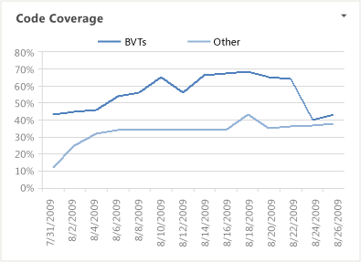

With the Code Coverage report, you can monitor how much code the team is testing over time. Team members can use this report to help determine how close parts of the code are to release quality. For information about how to access this report, see Excel Reports (GovDev) .
|
|
|---|
|
You can view the Code Coverage report from the Quality dashboard. You can access this dashboard only if your team project portal has been enabled and is provisioned to use Microsoft Office SharePoint Server 2007. For more information, see Access a Team Project Portal and Process Guidance. |
|
In this topic |
Related topics |
Required Permissions
To view the report, you must be assigned or belong to a group that has been assigned the Read permissions in SharePoint Products for the team project.
To modify or customize the report, you must be a member of the TfsWarehouseDataReaders security role in SQL Server Analysis Services. You must also be assigned or belong to a group that has been assigned the Members permissions in SharePoint Products for the team project. For more information, see Grant Access to the Databases of the Data Warehouse for Visual Studio ALM and Managing Permissions.
 Data
in the Report
Data
in the Report
The team can review the Code Coverage report to determine whether tests cover the code sufficiently and how the coverage changed over time. As the following illustration shows, the report provides a line graph of the build verification test (BVT) code coverage and other coverage over the most recent four weeks.
This report is based on a PivotChart report that shows the most recent four weeks of data that was captured for code changes and that is stored in the data warehouse.
Required Activities for Tracking Code Coverage
For the Code Coverage report to be useful and accurate, team members must perform the following activities:
-
Configure a build system. To use Team Foundation Build, you must set up a build system.
For more information, see Configure Your Build System.
-
Create build definitions. You can create several build definitions and then run each of them to produce code for a different platform. Also, you can run each build for a different configuration.
For more information, see Creating and Working with Build Definitions.
-
Define tests to run automatically as part of the build. As part of the build definition, you can define tests to run as part of the build or to fail if the tests fail.
For more information, see Define a Build Using the Default Template.
-
Configure tests to gather code coverage data. For code coverage data to appear in the report, team members must instrument tests to gather that data.
For more information, see How to: Configure Code Coverage Using Test Settings for Automated Tests and How to: Gather Code-Coverage Data with Generic Tests.
-
Run builds regularly. You can run builds at set intervals or after every check-in. You can create regular builds when you use the schedule trigger.
For more information, see Create a Basic Build Definition and Running and Monitoring Builds.
 Note
Note
Although a team member can manually rate a build by using Build Explorer, this rating is not reflected in the Build Quality Indicators report. The build rating appears in the Build Summary report. For more information, see Rate the Quality of a Completed Build and Build Summary Report.
Interpreting
the Report
If the team practices test-driven development or similar techniques, the code coverage should almost always approach 100%. If unit tests are reused as BVTs, the code coverage should be visible in the Code Coverage report.
You can review the Code Coverage report to answer these questions:
-
How much of the code is the team testing?
-
Does the team have sufficient code coverage?
-
Is code coverage increasing or decreasing over time?
For more information about how code coverage impacts quality, see Quality Dashboard (GovDev) and Build Quality Indicators Report .
Customizing
the Report
You can customize the Code Coverage report by opening it in Office Excel and changing the filter options or a column field list for the PivotTable report. You can modify the report to support other views, as the following table describes.
|
View |
Action |
|---|---|
|
Code coverage for an iteration |
Change the filter for Iteration(default=All) |
|
Code coverage for a product area |
Change the filter for Area(default=All) |
|
Code coverage for the most recent six, eight, or more weeks |
In the Columns PivotTable Field List, replace @@Last 4 weeks@@with a different Set |
For more information about how to work with and customize PivotTable and PivotChart reports, see the following pages on the Microsoft Web site: